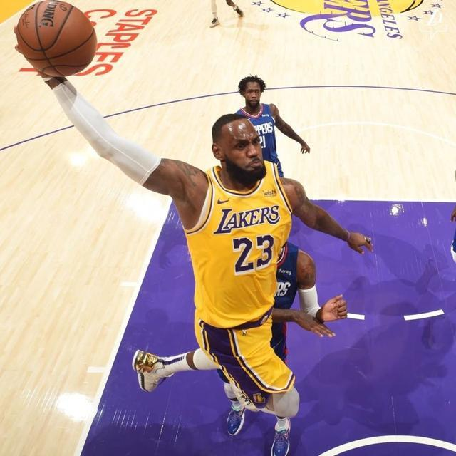
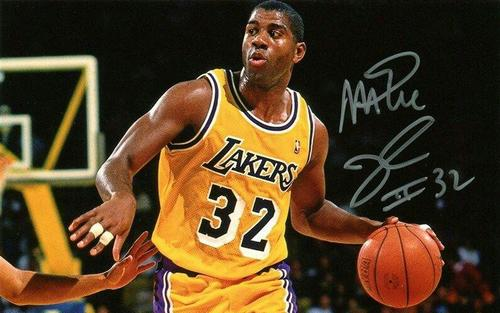

Shaquille O'Neal, born on March 6, 1972 in nevac, New Jersey, USA, is a former professional basketball player and a center. His nickname is Shaq and his nickname is Shaq. Shaquille O'Neill was selected by the Orlando Magic as the first player in the first round of the 1992 NBA draft. He played for the Orlando Magic, the Los Angeles Lakers, the Miami Heat, the Phoenix Suns, the Cleveland Cavaliers and the Boston Celtics. He was elected the NBA rookie of the year in the rookie season, and won the NBA championship four times. In 2000, Shaquille O'Neill played for the Orlando Magic, the Los Angeles Lakers, the Miami Heat, the Phoenix Suns, the Cleveland Cavaliers and the Boston Celtics He was elected to the NBA regular season MVP, NBA Finals MVP (fmvp) for 3 times, NBA all star lineup for 15 times and NBA all star MVP for 3 times, NBA best lineup for 8 times, NBA best lineup 2 for 4 times, NBA best lineup 3 for 2 times, NBA best defensive lineup 2 for 3 times, and NBA scoring king for 2 times. In 1996, Shaquille O'Neal was selected as the NBA50 superstar. Shaquille O'Neill announced his retirement on twitter on June 2, 2011. Shaquille O'Neill averaged 23.7 points, 10.9 rebounds and 2.3 blocks per field in his NBA career. He scored 28596 points, 13099 rebounds and 58.2% shooting percentage in his career. He is one of the strongest centers in NBA. On April 3, 2013, the Lakers held a retirement ceremony for Shaquille O'Neal's No. 34 shirt during the midfield time of the home game against the Mavericks. On April 4, 2016, Shaquille O'Neill was officially selected into the 2016 Nai Smith Basketball Hall of fame. On December 23 of the same year, the heat played the Lakers at home and held a retirement ceremony for O'Neill's No. 32 Jersey during the intermission.
LeBron James, whose full name is LeBron raymon James, was born in Akron, Ohio on December 30, 1984. He is an American professional basketball player and a small forward, nicknamed "little emperor", playing for the NBA Los Angeles Lakers. James was selected by the Cleveland Cavaliers in the first round of the 2003 NBA draft, and won the NBA regular season MVP in 2009 and 2010. James moved to Miami in 2010. In 2012, James won the third regular season MVP, the first championship and the finals MVP of NBA personal career, and won the gold medal of London Olympic Games on behalf of American men's basketball team, equating the record set by Michael Jordan in 1992. In 2013, James won the fourth regular season MVP, the second NBA championship and the second finals MVP, achieving two consecutive titles. In 2014, James returned to the Knights. In 2016, James led the Cavaliers to overcome the defending champion warriors to win the team's first championship and his third MVP. On July 10, 2018, James officially signed a four-year $153 million contract with the Lakers. In the 2019-20 season, James was elected the NBA assists king, won the fourth championship and his fourth MVP.
Elvin Johnson was selected by the Los Angeles Lakers as the No. 1 pick in the 1979 NBA draft. He played for the Los Angeles Lakers all his career. He won five NBA championships with the Lakers in 1980, 1982, 1985, 1987 and 1988. In the rookie season, he won the "three doubles" data in the first playoff game, finally won the first championship of his career, and became the youngest NBA Finals most valuable player (20 years old, 276 days). In his NBA career, he was elected MVP in regular season for 3 times, fmvp in NBA Finals for 3 times, NBA all star team for 12 times (NBA all star MVP for 2 times), NBA best lineup for 9 times, NBA best lineup 2 times, NBA stealer King 2 times and NBA assist King 4 times.